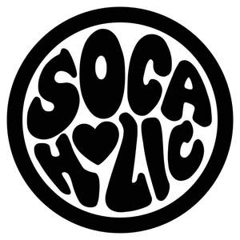
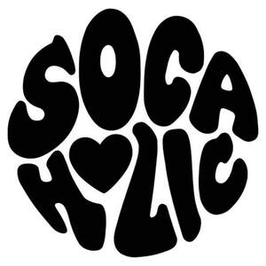

Trade Mark Journal No.2025/032 8 August 2025
UK00004239747 25 July 2025 (25,35,41)
Mark 1

Mark 2
Mark 3
Mark 4

- Class 25
- Costumes; Masquerade costumes; Costumes (Masquerade -); Dance costumes; Theatrical costumes; Dance clothing; Clothing; Embroidered clothing; Ready-made clothing; Jerseys [clothing]; Ready-to-wear clothing; Wristbands [clothing]; Woolen clothing; Woven clothing; Knitwear [clothing]; Jackets [clothing]; Waterproof clothing; Parts of clothing, footwear and headgear; Visors [clothing]; Headbands [clothing]; Shorts [clothing]; Men's clothing; Athletic clothing; Bottoms [clothing]; Tops [clothing]; Clothing for sports; Casual clothing; Hoods [clothing]; Clothing for leisure wear.
- Class 35
- Advertising; Advertising and marketing; Advertising and publicity; Publicity and advertising; Advertising and marketing services; Advertising, promotional and marketing services; Banner advertising; Advertising and marketing consultancy; Advertising, marketing and promotion services; Promotional and advertising services; Online advertising; Promotion [advertising] of business; Radio advertising; Promotion, advertising and marketing of on-line websites; On-line advertising and marketing services; Magazine advertising; Outdoor advertising; Design of advertising flyers; Distribution of advertising, marketing and promotional material; Digital advertising services; Promotion [advertising] of concerts; Advertising flyer distribution; Press advertising services; Direct market advertising; Advertising for others; Promotional advertising for exploration projects; Advertising, including on-line advertising on a computer network; Exhibitions for commercial or advertising purposes; Promotional marketing; Radio and television advertising; Marketing; Distribution of products for advertising purposes; Organisation of exhibitions for commercial and advertising purposes; Sponsorship search; Promotion of goods and services through sponsorship; Sponsorship search consultancy services; Arranging promotion of charitable fundraising events; Organisation of events for commercial and advertising purposes; Organisation of exhibitions for commercial or advertising purposes; Organization of events, exhibitions, fairs and shows for commercial, promotional and advertising purposes; Organization of exhibitions for commercial or advertising purposes; Business consultancy services relating to the promotion of fund raising campaigns; Advertising services for the promotion of beverages; Advertising, marketing and promotional consultancy, advisory and assistance services; Prize draws (Organising of -) for advertising purposes; Consultancy relating to the organisation of promotional campaigns for business; Modelling for advertising or sales promotion; Publicity and promotional services; Event marketing; Development of promotional campaigns; Arrangement of advertising; Negotiation of advertising contracts; Advertising, promotional and public relations services; Promotion of special events; Sales promotion; Business promotion; Promotional management of celebrities; Distribution of advertising announcements; Promotion of goods through influencers; Promotion of goods and services for others; Promotion of musical concerts; Arranging and conducting of promotional events; Organisation of exhibitions and trade fairs for business and promotional purposes; Retail services connected with the sale of clothing and clothing accessories; Retail services in relation to clothing accessories; Merchandising; Online retail store services relating to clothing; Retail services in relation to bags.
- Class 41
- Production of live entertainment events; Production of music concerts; Organisation of festivals; Music festival services; Conducting of performing arts festivals; Arranging of festivals for cultural purposes; Arranging of festivals for entertainment purposes; Music concerts; Entertainment in the nature of ethnic festival; Organisation of music concerts; Arranging of festivals for educational purposes; Live music concerts; Organizing cultural and arts events; Dance events; Organising community cultural events; Live musical concerts; Presentation of music concerts; Music performances; Conducting of cultural events; Artistic management of music venues; Arranging of cultural events; Conducting of live entertainment events; Entertainment in the nature of dance performances; Live music performances; Live performances by a musical bands; Art exhibitions; Arranging of concerts; Presentation of concerts; Presentation of musical concerts; Arranging and conducting of music concerts; Music concert services; Booking of seats for concerts; Musical concerts by radio; Musical concerts by television; Entertainment services in the form of concert performances; Band performances (Live -); Rental of concert halls; Live music shows; Entertainment in the nature of symphony orchestra performances; Arranging of musical events; Provision of live musical performances; Direction of music performances; Performing of music and singing; Organising of festivals; Festivals (Organisation of -) for entertainment purposes; Fetes (Organisation of -) for entertainment purposes; Organising events for entertainment purposes; Club [discotheque] services; Music mixing services; Radio entertainment; Selection and compilation of pre-recorded music for broadcasting by others; Disc jockey services for parties and special events; Live performances by a musical band; Disc jockey services; Entertainer services provided by musicians; Presentation of live performances by musical bands; Entertainment in the nature of live performances by musical bands; Disc jockeys for parties and special events; Production of sound and music recordings; Booking of performing artists for events (services of a promoter); Night club services [entertainment].
Nadia Valeri